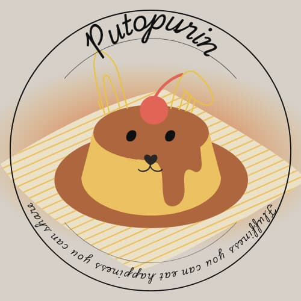

Fluffiness you can eat, happiness you can share
Ingredients
- Butter (for greasing)
- Egg custard: 4 egg yolks, ¾ cup condensed milk, 1 tbsp vanilla
- Puto batter: 2 egg whites, ½ cup milk, 1 cup flour, ½ cup sugar, ½ tbsp baking powder
Instructions
- Grease molds with melted butter.
- Mix egg custard ingredients and set aside.
- Prepare puto batter and pour into molds.
- Top with custard and steam for 15–20 minutes.
Safety & Sanitation
- Wash hands and wear clean uniforms.
- Clean surfaces regularly and store ingredients properly.
- Keep first aid kit and emergency contacts available.